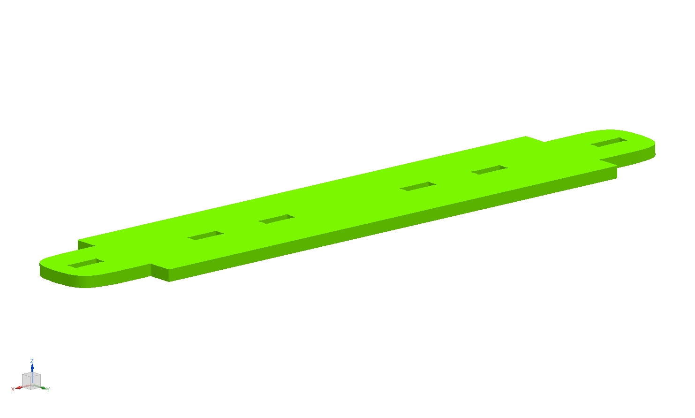
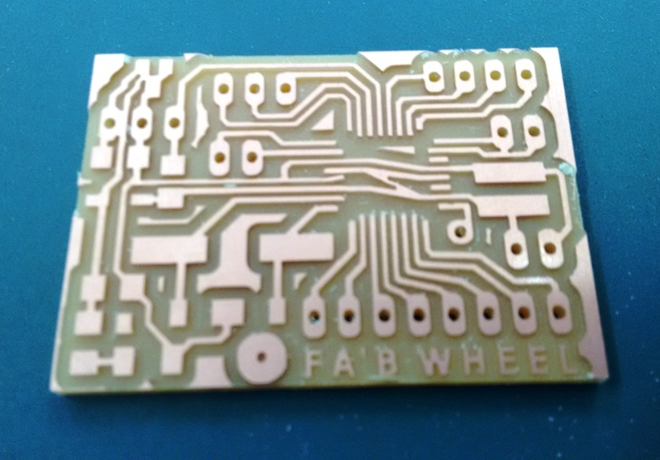
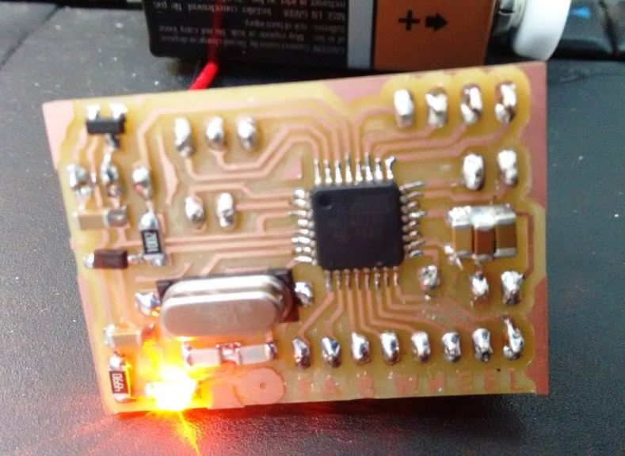

I splited the final project in to two main phases. The first one is the physical design and fabrication; and the second one the electronics part.
Designing the FabWheel
As the main work is centered on the robustness of the physical prototype the lions share of the time went into the physical design phase. I used NX as the design tool, and started with a layout initially. This layout is created in the sketch module parametrically, so that I could iterate the design as required.
Once The layout was a finalized, I proceeded to create the individual components, starting with the base support parts

Once these parts are made and assembled, then the rings for the slats were made. These rings were made in two parts for want of strength. The inner diameter is made to 2meters, so that it could fit someone bit taller than me. Considering the fit to the standard size plwoods of 8ft x 4ft, each rings were made in 3 parts of 120-deg included angle. Dovetail joints were used to join these. The inner rings also had the teeth to pressfit the slats. There are 51 slats which contituted the walking surface. The various design aspects of these parts are illustrtaed in the images below.
The DXF files where exported to and taken to the Shopbot's VCarve software to generate the NC code and cut using the Shopbot. The DXF files used for cutting is available in the files section and the screenshots of those are given below for ready reference.I have used 5 sheets of 19mm plywood and 2 sheets of 20mm plywood. Only the project speific things are discussed here and the documentation of shopbot is available in my Computer Controlled Machining Week Assignment.
Electronics Design
On the electronics part, I wanted to sense the number of rotations and get it displayed on a mobile device.
For the sensing the rotations, I thought to use Reed Switch, and ordered one like this.
On the controller part, I used the ATmega328P and based my design on the satshakit micro. The micro design was very compact for my application, and was compactly routed. I also added a regulated power input circuit, so that a 9V battery could be used in the circuit. The eagle schematics and board files are shown in the images. Please find the list of components in the BOM attached towards the end of this page.


Electronic Housing
I wanted the electronic housing to be a fastener free design permiting distance adjustment with the magnet. I have provisioned a lateral member in the base design to mount these and any other attachments as required. The electronic housing also wnt through multiple iterations before finalised on the design that is 3D printed.
MIT's Appinventor is used to create the companion app for the fabwheel. My plan was to display the number of rotations of the fabwheel in the app.
Conclusion and future plans
This project has enabled me to showcase the various skills learned and practiced duirng the fabacademy course, and I was very happy when everybody had fun walking on the fabwheel, and it was a crowd puller and curiosity generator during many of the group visits in our fablab. I plan to take this to my work place and gradually later continue to add more module including a small power generator, RGB light strips, integration to computer games, gamified leaderbords etc.
Poster and the video illustrating the Finished part for the final presentation are available in Final Results page.
The various files created as part of this project is available to download here, (the link opens in a new window)